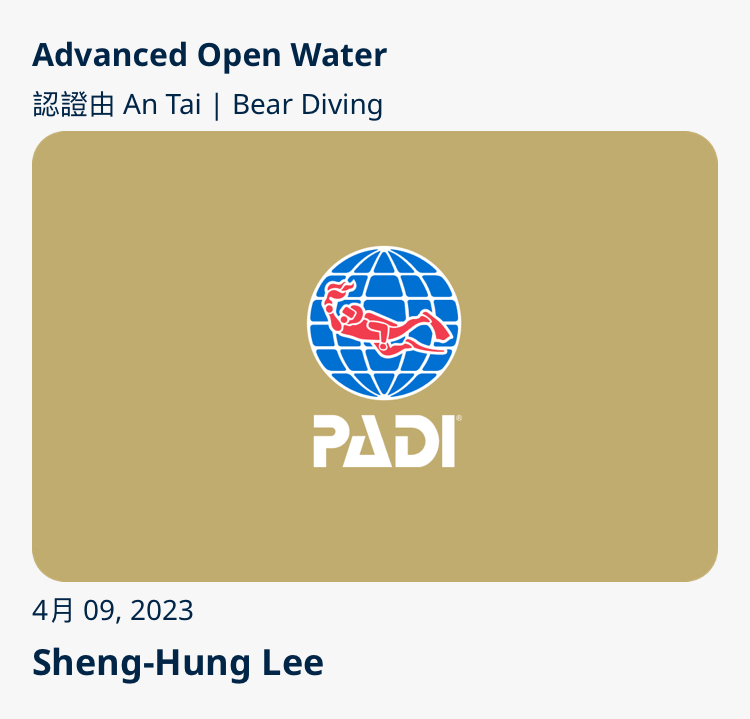
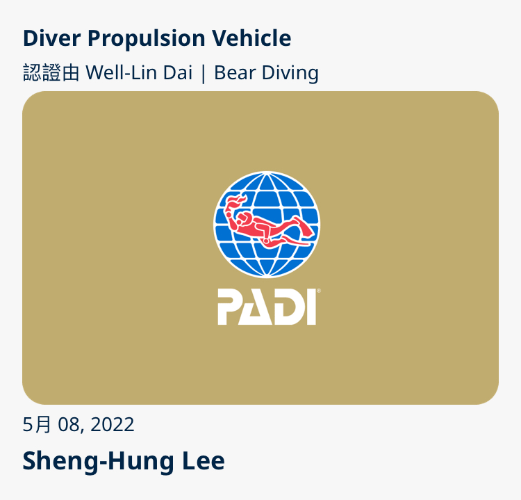

教育學歷
清雲科技大學電機系
二技畢業
專題主題:類神經網路字型圖樣辨識系統
類神經網路是一種非線性的映射方式，其將輸入之特徵值對應到網路的輸出分類結果，並可依照其分類的誤差大小，或某些能量函數來調整網路中的加權值使其達到收斂。
依Matlab完成類神經網路程式、計算不變矩參數程式之設計、及圖樣識別系統的效能驗證設計，並完成結果分析
工作經驗
電腦業務銷售、硬體維修工程師、網路工程師、婚攝助理
照片集


證照
ISO 27001

潛水證照
 
休閒興趣
水肺潛水、密室逃脫、劇本殺、生存遊戲、滑雪
水肺潛水
目前有4年經歷，取得4張證照50+隻氣瓶，到過長灘島、沖繩、小琉球、綠島、墾丁、東北角，未來希望可以到更多國家潛水
密室逃脫、劇本殺
目前玩過大大小小有50場，跟著朋友從北玩到南，有恐怖也有歡樂，未來繼續挑戰破百場。
生存遊戲
2024年底剛入坑，雖然被打得很痛，但跟朋友間相互廝殺的快感，讓我們增進不少友誼(我希望是增加，不是減少)
滑雪
目前還是初學者到過日本野澤、韓國滑雪，未來希望可以更精進滑雪的技巧
聯繫方式